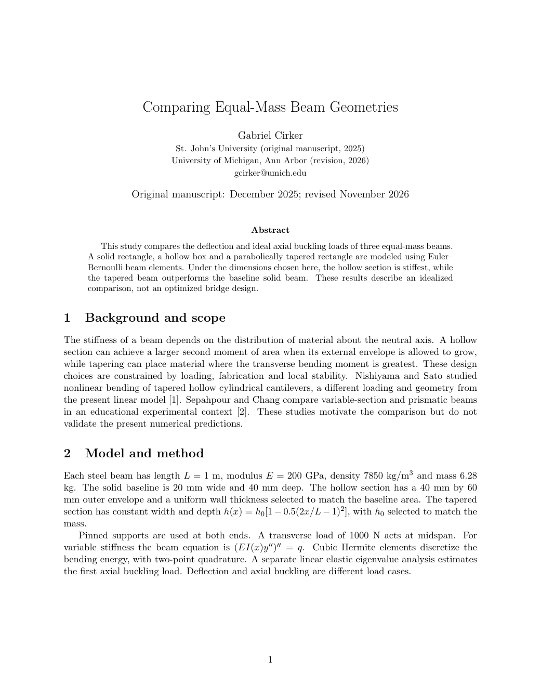
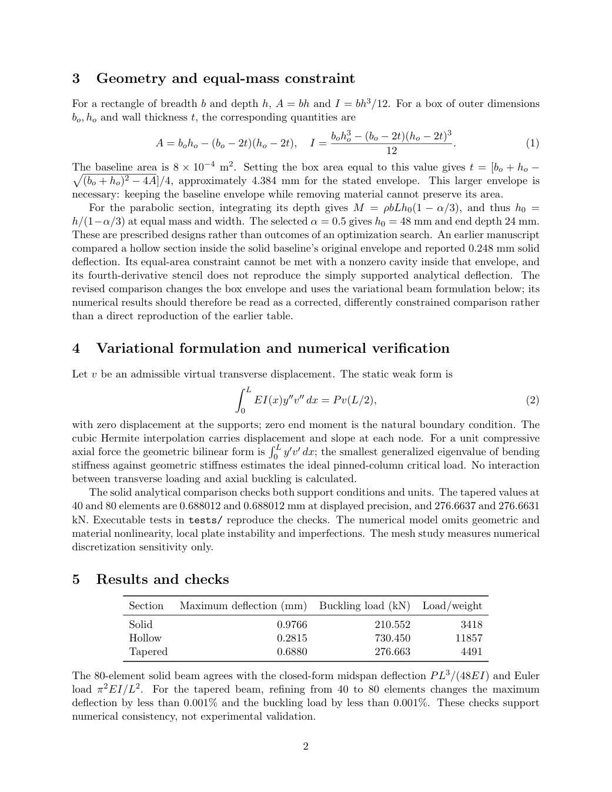
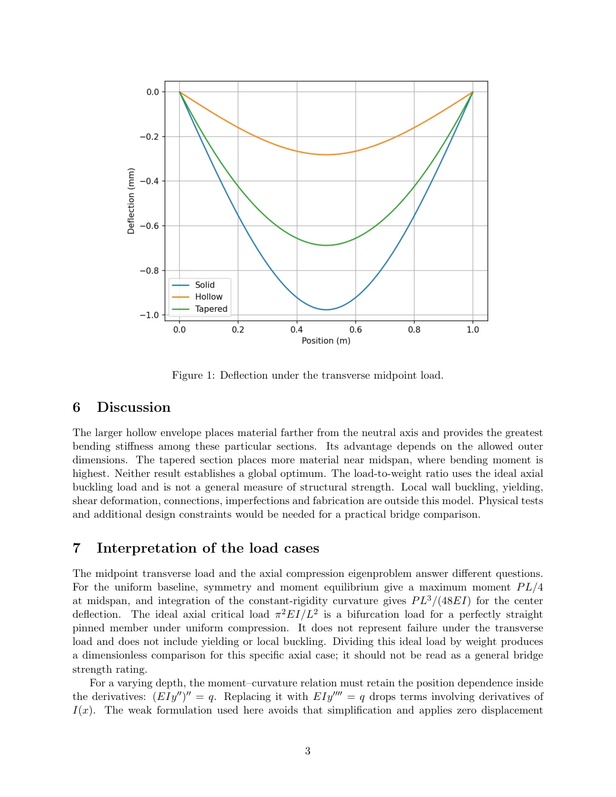
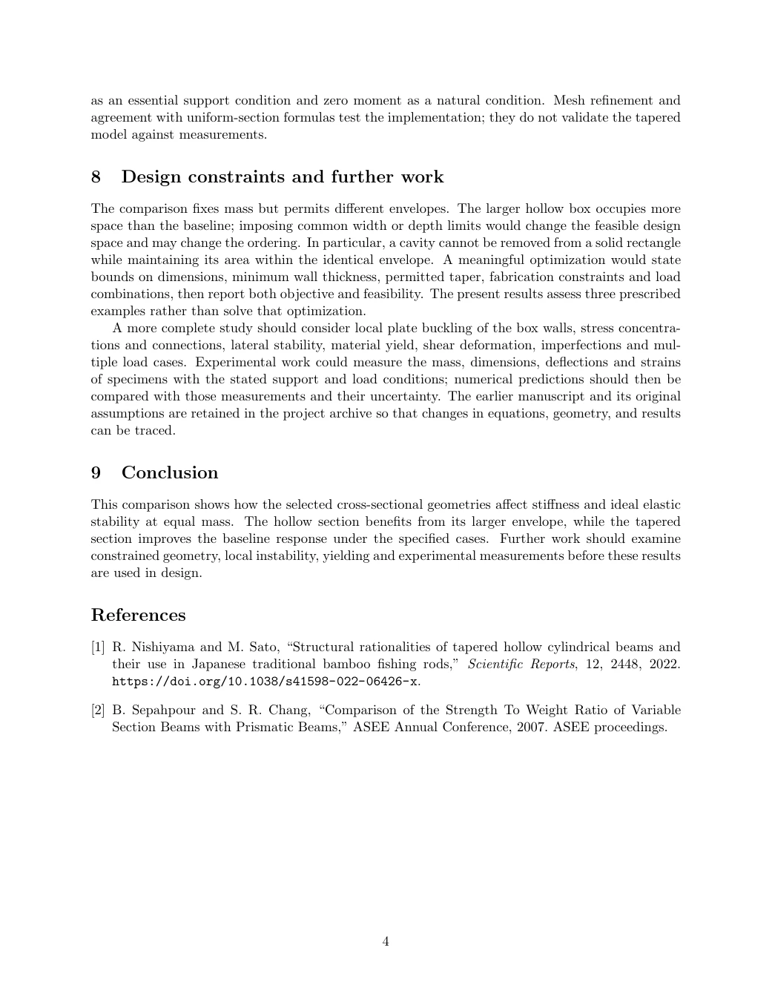

Structural mechanics / Research project
Same material.
Different geometry.
A numerical comparison of solid, hollow, and tapered beams, exploring how equal-mass sections differ in stiffness and ideal elastic stability.
St. John’s University (original manuscript)
Updated affiliation: University of Michigan, Ann Arbor (revision)
An idealized comparison of three prescribed designs, not a global optimization or a practical bridge design. The hollow section uses a larger envelope. Transverse deflection and axial buckling are separate load cases. Numerical checks are not experimental validation.
01 / Results
Same mass. Different response.
For these dimensions, the larger hollow section has the lowest transverse deflection and highest ideal axial buckling load. Tapering also improves on the solid baseline.

1,000 N midpoint load
Pinned supports at both ends. Values are simulated, not measured.
| Section | Deflection mm | Axial critical load kN |
|---|---|---|
| Solid | 0.9766 | 210.552 |
| Hollow | 0.2815 | 730.450 |
| Tapered | 0.6880 | 276.663 |
The axial eigenvalue is not a failure load for the transverse case. Yielding, local buckling, imperfections, connections and fabrication are outside the model.
02 / Current report
Read the full study here.
Comparing Equal-Mass Beam Geometries. The current four-page report with equations, numerical checks, results and limitations.




Use the embedded PDF viewer Search and native PDF controls
If your browser does not show PDF controls, the complete page images above remain available.
03 / Methods and reproducibility
From assumptions to code.
Numerical model
Cubic Hermite beam elements, variable bending stiffness and separate axial stability analysis.
Checks & limitations
Solid-beam analytical checks and 40-to-80-element tapered mesh refinement.
Report & results
Current LaTeX source, original PDF and saved simulation outputs.
Research archive
Original work, unused material, corrected drafts and intermediate versions with provenance.
Run the model and checks Python · NumPy · SciPy · Matplotlib
Clone or download the repository, then run from its root directory. The final command replaces the saved plot and summary in your local copy.
python3 -m venv .venv
source .venv/bin/activate
python -m pip install -r requirements.txt
python -m unittest discover -s tests -v
python src/bridge_model.py